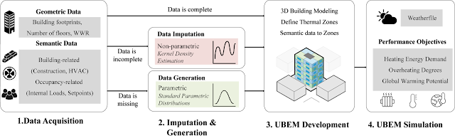
Journal at 2025: A Method For Zone-level Urban Building Energy Modeling In Data-scarce Built Environments
How to use TRUBA for deep learning with PyTorch - 2
How to use TRUBA for deep learning with PyTorch - 1
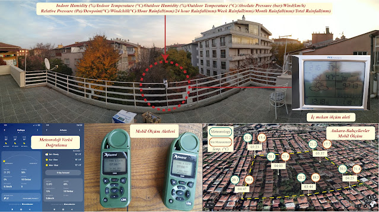
Urban Heat Island Measurement in Ankara, 2021
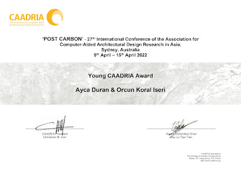
Young CAADRIA Award - 2022
An Exploratory Multi-objective Retrofit Decision-making Process
designperformance-based designcomputational designenergyplusarchitectureenergy
The Comparative Study on the Influence of Early Architectural Design Decisions on Energy Demand: A Case Study in Turkey
Conference Papercomputational designperformance-based designalgorithmicenergyplusarchitecture
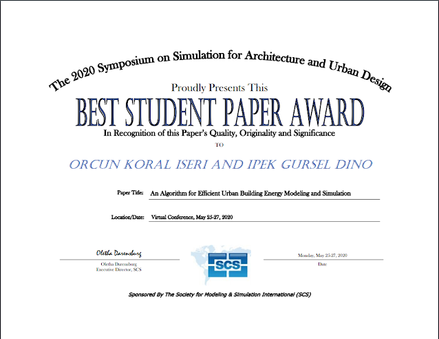
Simaud2020 - Best Student Paper Award
Conference Paperconferencesimaud2020

An Algorithm for Efficient Urban Building Energy Modeling and Simulation
Conference Paper
Climate Change Impact on Multi-Objective Optimization: A Case Study on Educational Buildings
Conference Paper

Vision-Based Lighting State Detection and Curtain Openness Ratio Prediction
Conference Paper
Automated building energy modeling for existing buildings using computer vision
Conference Paper

Video Content Analysis-Based Detection of Occupant Presence for Building Energy Modelling
HypE Genetik Algoritması Kullanarak Net Bütçe Değeri ve Aydınlanma Oranının Dijital Model Üzerinden Optimizasyonu
Conference Paper

Optimizing wall insulation material parameters in renovation projects using NSGA-II
Conference Paper

Tutorial: Investment
investmenttutorialstock

Tutorial: Economics & Society by Paul Krugman
economicssocietybeginnereconomytutorial
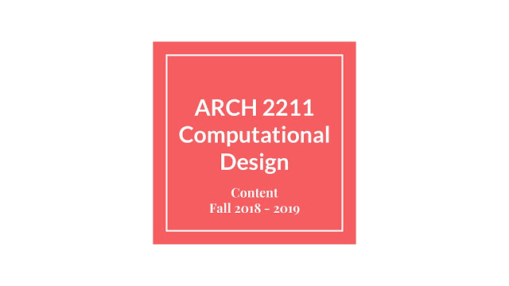
Lecture Content - Computational Design - Architecture 2nd year Undergraduate
izmirparametricgnperformative-designgrasshopperyaşar university
Machine Learning in a nutshell
AIflowchartanalysismachine learningneural networkalgorithm
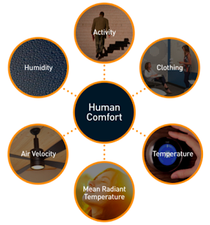
Thermal Comfort in Residential Buildings
ISO7730PPDindexmetabolic rateheat gain
CODING: PYTHON
techcodingplug-inpythondesignprogramming
CODING: C#
C#codingcdesignarchitecturecomputational
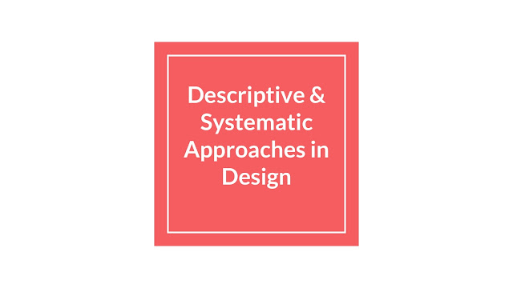
Descriptive & Systematic Methodology in Design Process
design vs. scienceprescriptivechunkmetusystematicintuitive
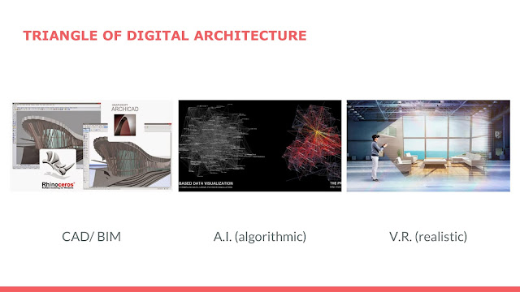
09.09.2018 - Introduction to Digital Design for Architecture
digitalalgorithmsbimcadAIcomputerization
18.09.2017 - Horizion 2020 - Secure, Clean and Efficient Energy Notes
efficiencycoolinghorizon 2020heatingconsumerenergy
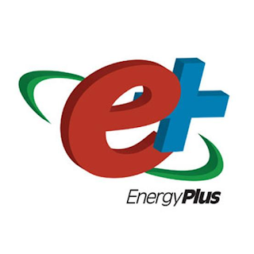
07.09.2017 - How to create or modify EnergyPlus Weather Data (EPW)
csvweatheropen-sourceepwenergyplusenergy
06.09.2017 - Operative Temperature / Mean Radian Temperature
meantemperaturethermalthermalcomfortairvelocity
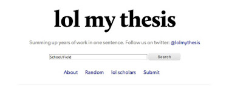
05.08.2017 - HOW TO WRITE THESIS
statementtopicorganizesupervisorthesis
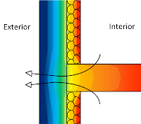
16.07.2017 - PHYSICAL TOPICS OF BUILDING
skyinternaldaylightningleakegesimulationmass

11.07.2017 - A.N.N. / PREDICTION MODEL
annsetdatatestingAIneural network
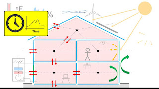
10.07.2017 - MODELING ENERGY SYSTEM
heathvaclevelCO2concentrationlosses
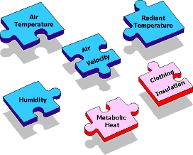
09.07.2017 - COMFORT CONTROL IN BUILDINGS
PMVindexIAQindexthermalIAQPMVvisual
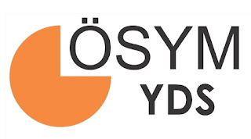
02.07.2017 - YDS (TÜRKÇE)
hedefyoutubesentence22paragraphcompletion
01.07.2017 - THERMODYNAMICS - DESIGN BUILDER - ALTENSIS
heatyoutubebasicsaltensisthermodynamicsconvection
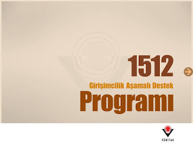
30.06.2017 - TUBITAK 1512
innovationşirketargeprocesssüreçtubitak

26.06.2017 - SCIENTIFIC RESEARCH
annyoutubeC#codeclassificationanalysis
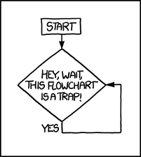
22.06.2017 - FLOW CHART / ANN
annanalysesopenstudiodatasimulationrecord
21.06.2017 - CODING
C#consolecodinglanguagealgorithm
20.06.2017 - TRAIN TO NZEB CONFERENCE
heatthermalbridgepassivehouseventivalitonphppopening

19.07.2017 - DAY 7 - NEURAL NETWORK
annC#matlabneuralnetworkmstasAI
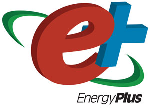
18.07.2017 - DAY 6 - ENERGYPLUS
C#annc++coilcrisis
17.07.2017 - DAY 5 - VISUAL STUDIO
C#youtubealgorithmscodingtutorialprogramming

15.06.2017 - DAY 4 - MSTAS.17
civilengineerconferencecommitteejunemstasbim
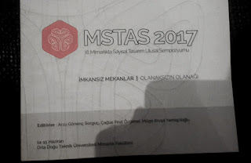
14.06.2017 - DAY 3 - CONFERENCE
conferencejuneankaramstascadmetu
13.06.2017 - DAY 2 - OPTIMIZATION
conferencemetuobjectivemetaheuristicjuneoptimization
11.June.2017 - DAY 1 - ABOUT ME
annyaşarjunehamdiulukayauniversitythesis
No posts match your search.